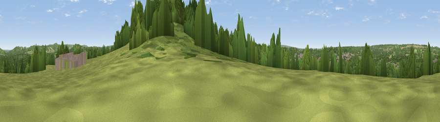

Viewpoint near Bramley
#39098 in England · top 57% of its area beats it · near BramleyWhere it is
The exact computed spot (SU 99075 44775). Click the marker for map links.
The view, rendered

A 360° render of this exact spot computed from the terrain model, tree cover and land cover — summer colours, afternoon light, calibrated against photographs of famous viewpoints. Real trees, hedges and buildings will differ in detail.
The panorama
Grey silhouette: terrain skyline in each direction (720 bearings, Earth curvature and refraction included). Dashed green: skyline with trees (+15 m) and buildings (+8 m) as obstacles. Blue strip: how far the ground is visible on each bearing.
Where the view opens
Wedge length = distance to the farthest visible ground on that bearing (vegetation-aware). Rings at 10, 25 and 50 km.
What fills the view
54% woodland · 33% grassland · 8% built-up · 4% cropland ·
Angular shares of the visible panorama (visual magnitude), not map area. Landscape diversity 0.46 (0–1 Shannon).
Key numbers
More beautiful places nearby
The staircase of upgrades: each row has a higher view potential than everything closer. Driving times are estimates from straight-line distance, calibrated against real road routing — check an actual route before setting out.
| Place | Direction | Drive | Score |
|---|---|---|---|
| Viewpoint near Bramley | SE · 0 km | ~1 min | 51.4 |
| Viewpoint near Shalford | NNE · 4 km | ~9 min | 54.5 |
| Viewpoint near Guildford | NNW · 4 km | ~9 min | 65.4 |
| Viewpoint near Compton | NW · 5 km | ~11 min | 66.7 |
| Viewpoint near Hascombe | SSE · 6 km | ~13 min | 69.5 |
| Viewpoint near Hascombe | S · 6 km | ~13 min | 70.1 |
| Viewpoint near Coldharbour | E · 15 km | ~27 min | 71.3 |
| Viewpoint near Fernhurst | SSW · 17 km | ~30 min | 75.1 |
51.19362, -0.58355 · source: screening · position refined by local search. Computed location — check access rights before visiting.